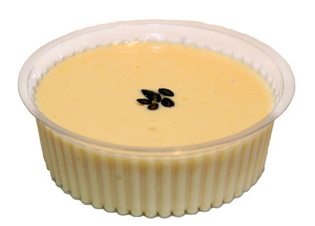

Receita - Mousse de Maracujá

Mouesse de maracujá no pote
Ingredientes
1 lata de leite condessado
1 lata de creme de leite
2 litros de suco de maracujá
1 pacote de jelatina incolor
Sementes de maracujá (para decoração)
Modo de Preparo
- Hidrate a gelatina na água
- Misture todos os ingredientes no liquidificador (com exceção do das sementes de maracujá)
- Coloque o mousse no pote e decore com as sementes
- Deixe na geladeira por aproximadamente 4 horas
- Agora é so comer
Informação nutricional
| Nutrientes |
Porção(60g) | |
%VD |
|
| Valor Calórico(Kcal) |
255,37 |
9,1 |
|
| Carboidratos(g) |
40,36 |
10,52 |
| Proteínas |
5,48 |
0,45 |
| Gorduras totais(g) |
4,37 |
7,02 |